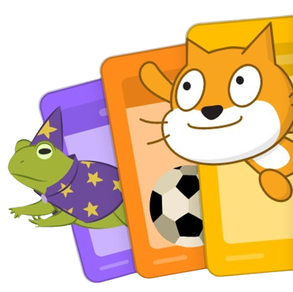

O que é lógica de programação em bloco?
A lógica de programação em bloco, especialmente no contexto do Scratch, é uma abordagem visual para ensinar e aprender programação para iniciantes e amplamente usada na educação. Em vez de escrever o código textual, os usuários montam programas arrastando e soltando blocos, que são coloridos e com formas específicas, representam diferentes instruções e estruturas de controle e são arrastados e conectados na área de programação, tornando o processo intuitivo e acessível. Existem blocos de ação (para tarefas), de controle (loops e condicionais), de dados (variáveis e listas) e de eventos (resposta a cliques ou teclas).
Os blocos de comando do Scratch são categorias de instruções que os usuários podem usar para criar scripts. Estes blocos permitem a criação de programas complexos de maneira intuitiva e visual, facilitando o aprendizado de conceitos de programação.
Aqui estão os nove tipos de blocos de comando do Scratch:
Movimento: Controla o movimento dos atores.
Som: Controla os sons tocados pelos atores.
Eventos: Dispara scripts em resposta a eventos.
Controle: Controle de fluxo como loops e condicionais.
Sensores: Detecta condições no ambiente do Scratch.
Operadores: Realiza operações matemáticas e lógicas.
Variáveis: Armazena e manipula dados.
Meus Blocos: Permite criar blocos personalizados.